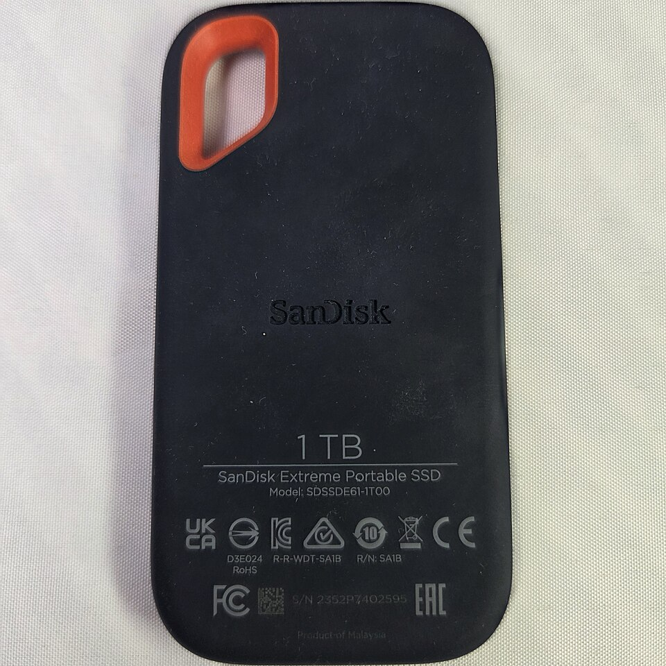
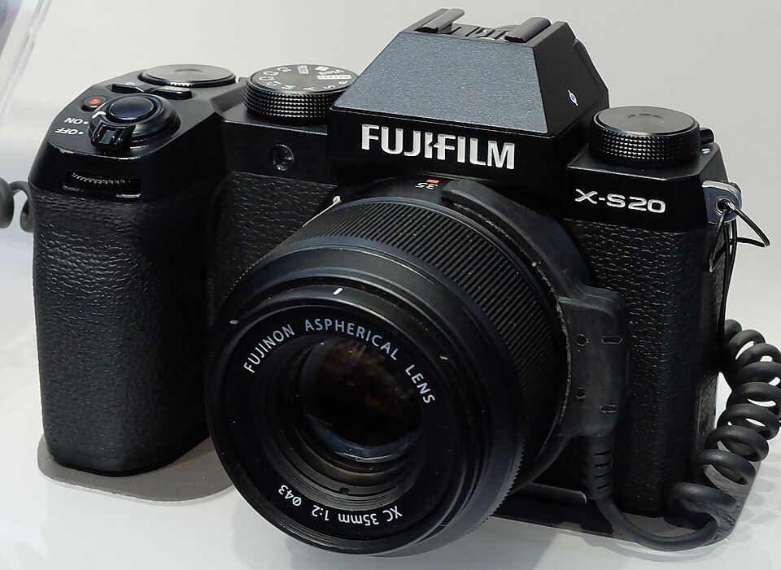
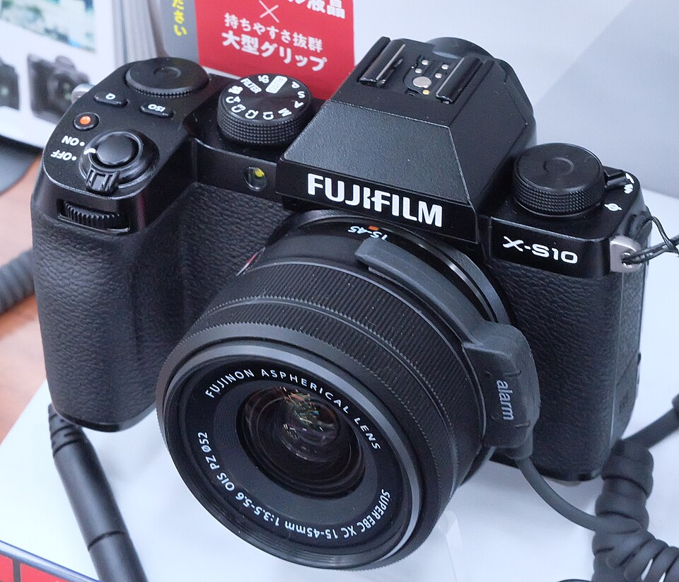

Compras Akihabara
Precios vistos el 7 nov 2026, con impuesto, en Kakaku y en tiendas. Los usados se venden rápido: tómalos como referencia, no como garantía. 1 MXN ≈ 8.5 ¥ (aprox., revísalo en el banco).
Plan de hoy
- PRIMERO: microSD nueva para la Pocket 3. La actual es falsa. Compra en tienda física.
- SSD 1TB SanDisk Extreme: código
SDSSDE61-1T00. Paga ≤ ¥31,000. - Cámara Fujifilm X-S20 usada con lente XC15-45: objetivo ≤ ¥162,000, máximo ¥165,000.
- Si la cámara entra: batería NP-W235 (¥7,760) y SD 128GB (¥7,346).
- Tope total de la cámara con todo: ¥170,000 ≈ 20,000 MXN.
0 · microSD para la Pocket 3 (urgente)
La prueba f3 del 7 nov mostró que la microSD de Amazon dice 256 GB pero solo guarda bien ~117 GB. Pasando eso, los videos se pierden o se escriben encima de otros. Por eso se cortaban las grabaciones. Los videos ya están respaldados y verificados en la laptop.
- SanDisk Extreme microSDXC 256GB, código
SDSQXAV-256G. Visto a ¥7,980 en Tsukumo (sin stock al buscar). - O Kingston Canvas Go! Plus 256GB, código
SDCG3/256GB. No encontré su precio en Japón. - Que diga V30 y U3. La Pocket 3 acepta hasta 1 TB.
- Solo en tienda física: Yodobashi, Bic o Tsukumo. Nunca de vendedores de marketplace.
- Desconfía si cuesta mucho menos que en Kakaku: así son las falsas.
- Antes de grabar con ella, se le corre
f3en la laptop. - La tarjeta vieja ya no se usa en la cámara.
1 · SSD portátil 1TB

Código en la caja:
SDSSDE61-1T00 (termina en -G25, -J25 o similar)
≈ 3,600 MXN. Si en la tienda cuesta más de ~¥33,000, mejor pídelo en línea.
Ver precio actual en Kakaku2 · Cámara

- Colores Fuji (simulaciones de película)
- Batería grande NP-W235: 750 fotos (CIPA)
- Estabilizador de 7 pasos, buena para video
- Modo automático en la rueda: fácil como primera cámara
Precios reales vistos: Minna vendió una en ¥155,000 (ya vendida, no hay más). Fujiya: X-S20 usada rango A en ¥165,000 (no confirmé si trae lente). Kakaku: la usada más barata en ¥172,000. Map Camera: solo cuerpo en ¥180,800 con 12 meses de garantía. Nueva: ¥185,165 en Minna. Lo normal hoy es ¥165,000 a ¥182,000; ¥155,000 fue suerte.
Usados en Kakaku Usados en Minna CameraSDSDXXD-128G (Tsukumo)¥7,346Compra primero cámara + SD y deja la batería extra para después: la cámara trae una. Ojo: la X-S20 usa SD de tamaño normal, no microSD.
Cuerpo usado visto en ¥159,500 a ¥165,000 (Fujiya) y ¥180,800 (Map). Con lente aparte se pasa del presupuesto casi seguro. Solo si el total es ≤ ¥165,000.

- Mismos colores y también tiene estabilizador
- Batería chica NP-W126S: compra 2 extra para el frío
- Usadas vistas: ¥144,800 (Amazon.co.jp), ¥161,580 a ¥176,080 (Sofmap en Rakuten). Casi lo mismo que una X-S20, que tiene mejor batería: mejor la X-S20. Solo vale la pena si la ves en ≤ ¥120,000.
La combinación más barata: cuerpo B a ¥154,000 + lente XC15-45 usado (¥18,200 a ¥22,000) ≈ ¥172,000 a ¥176,000, más SD ≈ 21,200 a 21,600 MXN. Un kit nuevo a ¥179,848 + SD ≈ 22,000 MXN, con garantía de Fujifilm. Hoy un usado ya no sale mucho más barato que uno nuevo.
Cuerpos usados en Kakaku Kit nuevo en KakakuFirmware más reciente: 3.30 (22 jul 2025). Después de actualizar, en iPhone se conecta con la app FUJIFILM XApp.
- Rueda dedicada a las simulaciones de película: colores Fuji directos
- Salió el 16 dic 2025: nueva y con garantía
- Batería: ~425 fotos por carga (casi la mitad que la X-S20). Lleva baterías extra; no confirmé el modelo ni su precio en Japón
- Probablemente sin estabilizador en el cuerpo (no confirmado en la ficha oficial)
- Batería grande NP-FZ100: 810 fotos (CIPA), más que la X-S20
- Tiene estabilizador en el cuerpo
- Menú solo en japonés (se traduce con Google Lens)
- No tiene los colores de Fuji; video de 8 bits; el lente 16-50 es básico
Soporte oficial de Sony: el idioma no se puede cambiar en cámaras compradas en Japón. Por eso la A6700 y la A6600 de Japón no te sirven, aunque la A6600 usada salga barata (~¥93,000 a ¥98,000 el cuerpo). Fujifilm sí trae inglés: desde 2025 sus modelos de Japón vienen en japonés e inglés (los "日英2言語設定モデル"), y los anteriores traen varios idiomas.
Cuerpo + lente por separado sale en ~¥188,000: siempre conviene más el kit.
Usados en Kitamura- Revisa que el menú tenga inglés (MENU → 設定 → 言語 / LANG).
- Disparos: toma una foto JPG y revísala en una app de "shutter count"; la X-S20 lo guarda en el EXIF. Vida nominal: 100,000. Menos de ~10,000 es buena señal.
- Graba 10 segundos de video con el micrófono interno y escúchalo: hubo reportes de un "chi-chi-chi" en el audio.
- Firmware: pregunta la versión; luego actualízala a la última desde la web de Fujifilm (corrigió un problema de exposición).
- La garantía de la tienda solo sirve en Japón. Prueba todo bien en la tienda.
- Estado A o AB. Nada que diga ジャンク (junk).
- Que traiga la batería original y la garantía de la tienda (保証).
- Pruébala: toma fotos, mueve el zoom y revisa que el lente no tenga hongo ni rayas.
- Toma foto de la etiqueta y mándamela.
3 · Tiendas
4º piso, cerca de la salida central de la estaciónMapa
cámaras y lentes usadosMapa
SSD y tarjeta SDMapa
batería NP-W235, 10% en puntosMapa
~20 min en la línea ChuoMapa
Revisa el horario en el mapa antes de ir.
4 · Frases para la tienda
Enséñale la pantalla al vendedor.
5 · Tax-free (desde el 1 nov 2026)
- Ahora pagas el precio con impuesto.
- El 10% te lo devuelven en la aduana del aeropuerto al salir, antes de documentar.
- Lleva el pasaporte al comprar y trae lo que compres en el equipaje de mano.
- No confirmé si aplica a cámaras usadas: pregúntalo en la tienda (ver frases).
Fotos de Wikimedia Commons bajo CC BY-SA 4.0. Precios de Kakaku, Minna Camera, Yodobashi, Tsukumo y Fujiya.